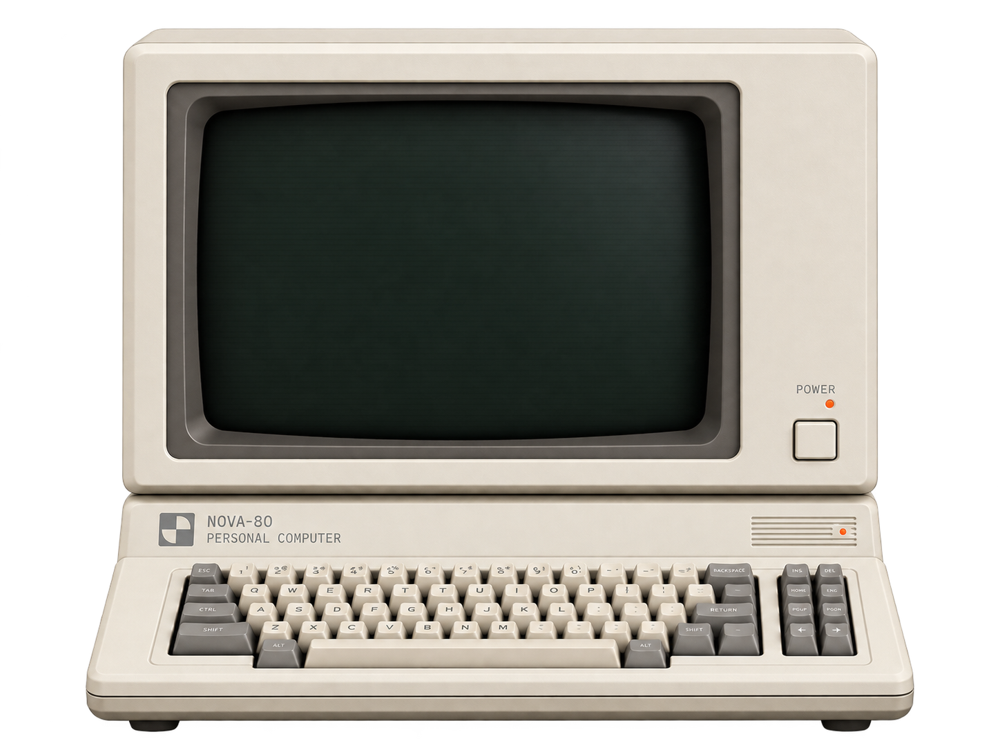

产品策略与设计
01好产品源于对人的深刻洞察。 我会做调研、评审和用户测试， 先弄清人们真正需要什么。
AI-Native 设计师
狂热的 AI 实践派。用代码与模型重塑设计手段，只用 AI 搞定工作中的一切不可能。

它们已经嵌进我每天的工作流里
每个像素都应该有理由
我不用「好看不好看」来评价设计
好产品源于对人的深刻洞察。 我会做调研、评审和用户测试， 先弄清人们真正需要什么。

界面要做的， 是让信息、行动和感受形成秩序。

品牌是一套系统， 能被持续识别，也能被记住。
我不太喜欢被单一岗位名称框住，我的核心一直是设计，只是这些年解决问题的手段越来越多。视觉、平面、展会、品牌、AI，对我来说都是不同的入口。我更关心的是：这个问题最后有没有被解决。
从 2023 年开始，我几乎没错过一轮主流 AI 工具迭代。现在我会用它做视觉、改文案、给灵感、做 Agent、整理信息、测试想法。
我很少停在“会不会用这个工具”这一层。我更习惯去拆它能解决什么问题、适合放在哪个流程里、能不能真正省时间，最后再把它接进自己的工作方式里。（AI 有九个段位，有机会可以科普）
我对陌生问题的容忍度比较高，很多时候甚至会觉得这部分更有意思。通常先拆问题。然后查、试、问 AI、做 Demo、推翻，再做一版。
我希望和重视结果、愿意讨论问题本身，也愿意尝试新方法的人一起工作。如果一个团队只希望设计师“把图做出来”，那可能不是最适合我的环境。我更喜欢设计能真正参与判断、推动项目，并且和产品、品牌、技术一起往前走的工作方式。
会。但如果这是你最关心的问题，我更想聊聊 AI 时代设计师的能力边界已经变成什么了。